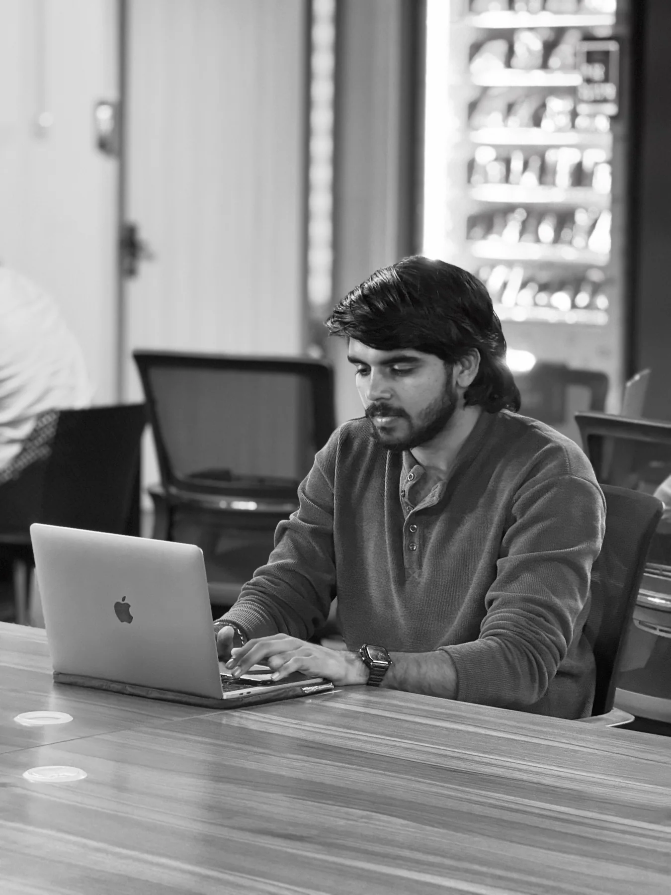

Operating Systems
Linux · Ubuntu · Windows

OPEN TO ENTRY-LEVEL OPPORTUNITIES
HELLO, I'M
A Software Development and System Administration graduate interested in Linux, cloud technologies, automation, and building reliable application environments.
01 / ABOUT
I enjoy understanding how systems work, solving technical problems, and turning ideas into dependable solutions.
My background combines software development with system administration. Through hands-on work, I have practised containerising applications, deploying microservices with Kubernetes and Helm, administering Linux environments, and automating server tasks with Bash.
02 / TOOLKIT
Technologies and concepts explored through coursework, training and practical projects.
Linux · Ubuntu · Windows
Docker · Docker Compose
Kubernetes · Minikube · Helm
Bash · Git · GitHub · Cron
Cloud concepts · Microsoft Azure fundamentals
Python · Java · JavaScript · HTML · CSS · Node.js
SQL · MySQL · PostgreSQL
Problem solving · Debugging · Team collaboration
Ansible
Terraform
03 / SELECTED WORK
Practical projects focused on deployment, Linux administration, automation and application delivery.
A containerised microservices application with separate product, order and user services, a web frontend and PostgreSQL database. Packaged and deployed locally using Kubernetes and Helm.
A Linux server administration and recovery project featuring automated backups, deployment support, monitoring, restore operations and server reporting using Bash scripts and cron scheduling.
$ ./monitor.sh
✓ CPU STATUS ........ OK
✓ DISK STATUS ....... OK
✓ BACKUP ............ DONE
✓ SERVICE CHECK ..... OK
$ _
Created an Ubuntu 24.04 container, configured a support user, installed curl and Vim, created a troubleshooting workspace, and verified that changes persisted after restarting the same container.
04 / EDUCATION
MES College Marampally
Mahatma Gandhi University · Ernakulam, Kerala
DEGREE COMPLETED · 2026AkumenByQ
Currently completing an internship focused on cloud and DevOps.
INTERNSHIP IN PROGRESS